<!DOCTYPE html>
<html lang="en">
  <head>
    <meta charset="utf-8" />
    <meta name="viewport" content="width=device-width, initial-scale=1.0, maximum-scale=1.0, user-scalable=no" />

    <title>Symmetry reduced Flag-hierarchies</title>
    <link rel="shortcut icon" href="./favicon.ico" />
    <link rel="stylesheet" href="./dist/reset.css" />
    <link rel="stylesheet" href="./dist/reveal.css" />
    <link rel="stylesheet" href="./dist/theme/night.css" id="theme" />
    <link rel="stylesheet" href="./css/highlight/zenburn.css" />


  </head>
  <body>
    <div class="reveal">
      <div class="slides"><section  data-markdown><script type="text/template">
$$\require{color}$$
<!-- reveal-md slides.md -w --theme night -->
<!-- reveal-md slides.md --theme night --static _site -->
<!-- Then copy videos! -->
## Symmetry reduced Flag-hierarchies

-

### Daniel Brosch
<!-- #### Tilburg University -->
March 28, 2022
</script></section><section  data-markdown><script type="text/template">
## Contents

- Semidefinite programming <!-- .element: class="fragment" data-fragment-index="1"-->
- Symmetry reduction basics <!-- .element: class="fragment" data-fragment-index="2" -->
- Representation theory <!-- .element: class="fragment" data-fragment-index="3" -->
<span class="fragment" data-fragment-index="4" style="color:orange">(of $S_n$) </span>
- Flag-Algebras <!-- .element: class="fragment" data-fragment-index="5" -->
- Lasserre style hierarchy <!-- .element: class="fragment" data-fragment-index="6" -->
- Razborov style hierarchy <!-- .element: class="fragment" data-fragment-index="7" -->
- Advanced ideas <!-- .element: class="fragment" data-fragment-index="8" -->

<div class="r-stack">

$$ \inf\\{\langle C,X\rangle : \langle A_i, X\rangle = b_i \forall i, X\succcurlyeq 0\\} $$ <!-- .element: class="fragment fade-in-then-out" data-fragment-index="1"-->

 <!-- .element: class="fragment fade-in-then-out" data-fragment-index="2"-->

 <!-- .element: class="fragment fade-in-then-out" data-fragment-index="4"-->

$$V = m_1S_1\oplus m_2S_2\oplus \ldots \oplus m_kS_k$$ <!-- .element: class="fragment fade-in-then-out" data-fragment-index="3"-->


 <!-- .element: class="fragment fade-in-then-out" data-fragment-index="5"-->

</div></script></section><section ><section data-markdown><script type="text/template">
## Semidefinite programming

<br />

<div class="r-stack">

$$ \inf_X\\{\langle C,X\rangle : \langle A_i, X\rangle = b_i \forall i, X\succcurlyeq 0\\} $$ <!-- .element: class="fragment fade-out" data-fragment-index="1" -->

$$ \inf_X\\{\langle C,X\rangle : \langle A_i, X\rangle = b_i \forall i, \fcolorbox{orange}{black}{$X\succcurlyeq 0$}\\} $$ <!-- .element: class="fragment fade-in-then-out" data-fragment-index="1" -->

</div> 
</script></section><section data-markdown><script type="text/template">
### The anatomy of an SDP

<div class="r-stack">

$$ \inf_X\\{\langle C,X\rangle : \langle A_i, X\rangle = b_i \forall i, X\succcurlyeq 0\\} $$ <!-- .element: class="fragment fade-out" data-fragment-index="1" -->

$$ \inf_X\\{\langle {\color{orange}C},X\rangle : \langle {\color{orange}A_i}, X\rangle = b_i \forall i, X\succcurlyeq 0\\} $$ <!-- .element: class="fragment fade-in-then-out" data-fragment-index="1" -->

$$ \inf_X\\{{\color{orange}\langle} C{\color{orange},}X{\color{orange}\rangle} : {\color{orange}\langle} A_i{\color{orange},}X{\color{orange}\rangle} = b_i \forall i, X\succcurlyeq 0\\} $$ <!-- .element: class="fragment fade-in-then-out" data-fragment-index="2" -->

$$ \inf_X\\{\langle C,X\rangle : \langle A_i, X\rangle = b_i \forall i, \fcolorbox{orange}{black}{$X\succcurlyeq 0$}\\} $$ <!-- .element: class="fragment fade-in-then-out" data-fragment-index="3" -->

$$ \inf_X\\{\langle C,X\rangle : \langle A_i, X\rangle = b_i \forall i, X\succcurlyeq 0\\} $$ <!-- .element: class="fragment fade-in-then-out" data-fragment-index="4" -->

</div> 

<br />

<div class="r-stack">

<div>$\color{orange} C, A_i\in\mathbb{S}^{n\times n}$ are symmetric data matrices </div> <!-- .element: class="fragment fade-in-then-out" data-fragment-index="1" -->

<div>$\color{orange} \langle\cdot,\cdot\rangle$ denotes the matrix inner product: $$\langle A,B\rangle = \sum_{i,j=1}^n A_{ij} B_{ij}$$ </div> <!-- .element: class="fragment fade-in-then-out" data-fragment-index="2" -->

$ \color{orange} X\succcurlyeq 0 $ means that $X$ is **positive semidefinite**: $$v^TXv\geq 0 \text{ for all vectors } v.$$  
<!-- .element: class="fragment fade-in-then-out" data-fragment-index="3" -->

SDPs are **linear optimization problems** over a **convex cone**. We can solve them in **polynomial time!**
<!-- .element: class="fragment fade-in-then-out" data-fragment-index="4" -->
</div> 
</script></section><section data-markdown><script type="text/template">
### SDPs for polynomial optimization

<div class="r-stack">

<span class="fragment fade-out" data-fragment-index="1">

We often want to minimize a polynomial under some polynomial constraints:

$$\min_x \\{{\color{green}f}(x): {\color{red}g_i}(x)\geq 0 \quad\forall i\\}.$$

</span>

<span class="fragment fade-in" data-fragment-index="1">
We can rewrite this problem as 

$$ \max_{\lambda, s} \\{\lambda : {\color{green}f}-\lambda = {\color{orange}s_0} + \sum_i {\color{orange}s_i} {\color{red}g_i} \geq 0\\},$$
where the $\color{orange}s_j$ are **nonnegative polynomials**.
</span>
</div>
</script></section><section data-markdown><script type="text/template">
### Sums-of-Squares


<span class="r-stack">
<span class="fragment fade-out" data-fragment-index="1">

We can relax the nonnegative polynomials $\color{orange}s_j$ to be **sums of squares** of polynomials:

$${\color{orange}s_j}(x) = \sum_{t} p_t(x)^2 \geq 0.$$

</span>

<span class="fragment fade-in-then-out" data-fragment-index="1">

Given a polynomial basis 
$${\color{red}[x]}=\\{1, x_1, x_2, x_1^2, x_1x_2,\ldots\\}$$
we can write the squared polynomials in the form
\begin{align}
p_t(x)^2 &= \left({\color{red}[x]}^Tv_t\right)^2\\\\
&= {\color{red}[x]}^T\left(v_tv_t^T\right)  {\color{red}[x]}.
\end{align}

</span>

<span class="fragment fade-in" data-fragment-index="2">

$${\color{orange}s_j}(x) ={\color{red}[x]}^T\left(\sum_t  v_t v_t^T\right)  {\color{red}[x]} =  {\color{red}[x]}^T X  {\color{red}[x]},$$

where $X$ is **positive semidefinite**.

</span>

</span>
<span class="fragment fade-in" data-fragment-index="3" style="color:orange">
Comparing coefficients leads to a standard SDP!
</span>


</script></section></section><section ><section data-markdown><script type="text/template">
## SDP Symmetry reduction basics

<br />

 <!-- .element: class="r-stretch" -->
</script></section><section data-markdown><script type="text/template">
### What is a symmetry?


<br />

Let ${\color{orange}\sigma}$ be a **permutation** of $\\{1,\ldots, n\\}$. We let ${\color{orange}\sigma}$ act on the *indices of $X$ simultanously*:

$${\color{orange}\sigma}(X) = \left(X_{{\color{orange}\sigma}(i){\color{orange}\sigma}(j)}\right)_{i,j=1}^n.$$

<br />

<span class="fragment fade-in" style="color:orange">If $X$ is positive semidefinite, then $\sigma(X)$ is as well!</span>
</script></section><section data-markdown><script type="text/template">
### When does an SDP have a symmetry?

 
<div class="r-stack">

An SDP has symmetry ${\color{orange}\sigma}$, if ${\color{orange}\sigma}$ sends feasible solutions to feasible solutions with the same objective value. <!-- .element: class="fragment fade-out" data-fragment-index="1" -->

<span class="fragment fade-in" data-fragment-index="1">


This holds if for each constraint $\langle A_i,X\rangle=b_i$ there is a $j$ such that
 $${\color{orange}\sigma}(A_i)=A_j, \quad b_i=b_j$$
and the objective is symmetric:
$${\color{orange}\sigma}(C)=C.$$

</span></div>

</script></section><section data-markdown><script type="text/template">

### How do we exploit symmetries?


The set of all symmetries forms a **group ${\color{orange}G}$** of permutations. As the feasible set of an SDP is **convex**, we can **average** feasible solutions:

$$\mathcal{R}(X) = \frac{1}{|{\color{orange}G}|} \sum_{{\color{orange}\sigma}\in {\color{orange}G}}{\color{orange}\sigma}(X)$$


<span class="fragment fade-in" style="color:orange">

$\mathcal{R}(X)$ is again feasible, with the same objective value as $X$!

</span>
</script></section><section data-markdown><script type="text/template">
### Symmetric optimal solutions

<div class="r-stack">

<span class="fragment fade-out" data-fragment-index="1">
If $X^*$ is an optimal solution, then so is $\mathcal{R}(X^*)$. This solution is <span style="color:orange">invariant under actions of ${\color{orange}G}$</span>:
$${\color{orange}\sigma}(\mathcal{R}(X^*)) = \mathcal{R}(X^*). $$
</span>
<span class="fragment fade-in-then-out" data-fragment-index="1">

We can restrict the SDP to optimize only over <span style="color:orange">invariant</span> matrices:
\begin{align}
\inf\enspace&\langle C,X\rangle \\\\
\text{s.t.}\enspace& \langle A_i, X\rangle = b_i\quad \text{for all } i,\\\\
& X\succcurlyeq 0,\\\\
& {\color{orange}\mathcal{R}(X)=X}.\\\\
\end{align}

</span>
<span class="fragment fade-in-then-out" data-fragment-index="2">

In the case of ${\color{orange}G}=D_{10}=C_5\times Z_2$ we can restrict $X$ to have the **pattern**

$$\begin{pmatrix}
{\color{red}A} & {\color{orange}B} & {\color{green}C} & {\color{green}C} & {\color{orange}B}\\\\
{\color{orange}B} & {\color{red}A} & {\color{orange}B} & {\color{green}C} & {\color{green}C}\\\\
{\color{green}C} & {\color{orange}B} & {\color{red}A} & {\color{orange}B} & {\color{green}C}\\\\
{\color{green}C} & {\color{green}C} & {\color{orange}B} & {\color{red}A} & {\color{orange}B} \\\\
{\color{orange}B} & {\color{green}C} & {\color{green}C} & {\color{orange}B} & {\color{red}A}\\\\
\end{pmatrix}$$ 
</span>
</div>
</script></section><section data-markdown><script type="text/template">
### Block-diagonalization
<div class="r-stack">

<span class="fragment fade-out" data-fragment-index="1">

$$\tiny\begin{pmatrix}
{\color{red}A} & {\color{orange}B} & {\color{green}C} & {\color{green}C} & {\color{orange}B}\\\\
{\color{orange}B} & {\color{red}A} & {\color{orange}B} & {\color{green}C} & {\color{green}C}\\\\
{\color{green}C} & {\color{orange}B} & {\color{red}A} & {\color{orange}B} & {\color{green}C}\\\\
{\color{green}C} & {\color{green}C} & {\color{orange}B} & {\color{red}A} & {\color{orange}B} \\\\
{\color{orange}B} & {\color{green}C} & {\color{green}C} & {\color{orange}B} & {\color{red}A}\\\\
\end{pmatrix}
$$

is positive semidefinite if and only if

* ${\color{red}A} + {\color{orange}B} + {\color{green}C} \geq 0$,
* ${\color{red}A} +\frac{\sqrt{5}-1}{4}{\color{orange}B} - \frac{\sqrt{5}+1}{4}{\color{green}C} \geq 0$,
* ${\color{red}A} -\frac{\sqrt{5}+1}{4}{\color{orange}B}+\frac{\sqrt{5}-1}{4}{\color{green}C} \geq 0$.

</span>
<span class="fragment fade-in" data-fragment-index="1">
In general we may still get multiple bigger blocks


but <span style="color:orange">the sum of the block sizes is often significantly lower than $n$!</span>

<span class="fragment fade-in" data-fragment-index="2" style="color:red">
How do we find the block-diagonalization?
</span>

</span>
</div>


<aside class="notes"><p>This linearizes the problem.</p>
</aside></script></section></section><section ><section data-markdown><script type="text/template">
## Representation theory 

$$V = m_1W_1\oplus m_2W_2\oplus \ldots \oplus m_kW_k$$
</script></section><section data-markdown><script type="text/template">
### A ${\color{orange}G}$-module is
 
- a **vectorspace** $V$,
- a **group** ${\color{orange}G}$, and
- a **group homomorphism** $\rho:{\color{orange}G}\to \mathrm{GL}(V)$.

<br/><br/>

Together, they let ${\color{orange}G}$ act on vectors:

$$\color{orange}\boxed{gv := \rho(g)v}$$

<aside class="notes"><p>The image of the group homomorphism is a matrix representation, if one fixes a basis.</p>
</aside></script></section><section data-markdown><script type="text/template">### Example: ${\color{orange}S_n}$-module

The vectorspace of polynomials up to degree $d$ in $n$ variables:
$$\mathbb{R}[x_1,\ldots,x_n]_{\leq d}$$
is an ${\color{orange}S_n}$-module by defining

$${\color{orange}\sigma}(x_i) := x_{{\color{orange}\sigma}(i)}$$

and extending the operation to polynomials.

<aside class="notes"><p>Depending on if a left or right action is used for permutations, we may need to invert sigma.</p>
</aside></script></section><section data-markdown><script type="text/template">
### Irreducible modules

We call a ${\color{orange}G}$-module $V$ **irreducible**, if $V$ and $\\{0\\}$ are the only submodules of $V$.

<br />

<span class="fragment fade-in">
<div class="r-frame">
The $\color{orange}S_2$-module 

$$V = \mathrm{span}\\{1,x_1,x_2\\}$$

is not irreducible:

\begin{align}
V =& \enspace{\color{orange}\mathrm{span}\\{1\\}} \oplus {\color{orange}\mathrm{span}\\{x_1+x_2\\}}\\\\&\oplus {\color{green}\mathrm{span}\\{x_1 - x_2\\}}\\\\
\end{align}

</div>
</span>

<aside class="notes"><p>First two submodules are isomorphic!</p>
</aside></script></section><section data-markdown><script type="text/template">
### Maschke's Theorem

<span class="r-stack">
<span class="fragment fade-out" data-fragment-index="1">

We can decompose $\color{orange}G$-modules into irreducible submodules:

$$ V = W_1\oplus \ldots \oplus W_k.$$

</span>
<span class="fragment fade-in-then-out" data-fragment-index="1">

Sorting by equivalent (isomorphic) submodules, we see that 

$$V\simeq {\color{orange}m_1}S_1 \oplus \ldots\oplus {\color{orange}m_h}S_h,$$

where the ${\color{orange}m_i}$ are nonnegative integers, and the $S_i$ form a set of **all irreducible $G$-modules** up to isomorphism. 

</span>

<span class="fragment fade-in" data-fragment-index="3">

\begin{align}
V =& \enspace \mathrm{span}\\{1,x_1,x_2\\}\\\\
=&\enspace{\color{orange}\mathrm{span}\\{1\\}} \oplus {\color{orange}\mathrm{span}\\{x_1+x_2\\}}\\\\&\oplus {\color{green}\mathrm{span}\\{x_1 - x_2\\}}\\\\
\simeq&\enspace {\color{orange}2S^{(2)}} \oplus {\color{green}S^{(1,1)}}\\\\ 
\end{align}

The irreducible modules $S^\lambda$ of $S_n$ are called **Specht modules**.

</span>
</span>
</script></section><section data-markdown><script type="text/template">
### Schur's Lemma
#### The main ingredient of block-diagonalization

<br/>

<div class="r-frame">

Let $\color{orange}M$, $\color{orange}N$ be two **irreducible** $G$-modules over a ring $R$. Let ${\color{limegreen}\varphi} : {\color{orange}M}\to {\color{orange}N}$ be a homomorphism.

- If $\color{orange}M$ and $\color{orange}N$ are not isomorphic, then ${\color{limegreen}\varphi} \equiv 0$. <!-- .element: class="fragment"-->
- If ${\color{orange}M}\simeq {\color{orange}N}$ and $R$ is an algebraically closed field, then ${\color{limegreen}\varphi} = c\mathrm{I}$ for a $c\in R$. <!-- .element: class="fragment"-->

</div>
</script></section><section data-markdown><script type="text/template">
### Symmetry adapted basis

A "<span style="color:green">nice</span>" basis, which respects the decomposition
 $$V\simeq {\color{orange}m_1}S_1 \oplus \ldots\oplus {\color{orange}m_h}S_h,$$
is called **symmetry adapted basis** of $V$.

<br/>

"<span style="color:green">Nice</span>" essentially means that we choose the same basis in each copy of each $S_i$.
</script></section><section data-markdown><script type="text/template">
### Block-diagonalization

<span class="r-stack">
<span class="fragment fade-out" data-fragment-index="1">

Let $G$ now act on $\mathbb{C}^n$ via $\sigma(e_i) = e_{\sigma(i)}$. Swapping the basis of the SDP to a symmetry adapted basis of $\mathbb{C}^n$ **block-diagonalizes** the SDP:


</span>
<span class="fragment fade-in" data-fragment-index="1">
If $\mathbb{C}^n\simeq {\color{orange}m_1}S_1 \oplus \ldots\oplus {\color{orange}m_h}S_h,$

we obtain <span style="color:orange">$h$ different blocks of sizes $\color{orange}m_1, \ldots, m_h$</span>

each appearing with $\dim(S_i)$ identical copies.


</span>
</span>


<aside class="notes"><p>$G$ acts on the index space of $X$. We can delete the copies.</p>
</aside></script></section></section><section ><section data-markdown><script type="text/template">## Representation theory of ${\color{orange}S_n}$


</script></section><section data-markdown><script type="text/template">
### Permutation modules

<span class="r-stack">

<span class="fragment fade-out" data-fragment-index="1">

Let ${\color{orange}\lambda} = (\lambda_1,\ldots, \lambda_m)\in\mathbb{N}^m$ be a **partition** of $n$:

- $\lambda_1 \geq \lambda_2\geq \ldots\geq \lambda_m>0$,
- $\lambda_1+\ldots+\lambda_m = n$.

</span>
<span class="fragment fade-in-then-out" data-fragment-index="1">

A **Young-tableau** of *shape* $\color{orange}\lambda$ consists of $n$ boxes, positioned on $m$ rows, with $\lambda_i$ boxes in row $i$, and filled bijectively with $\\{1,\ldots,n\\}$.

<br/>


is a Young-tableau of shape $\color{orange}{(3,2)}$.

</span>
<span class="fragment fade-in-then-out" data-fragment-index="2">

A **Young-tabl<ins>oid</ins>** is the *row-equivalence* class of a Young-tableau:


</span>
<span class="fragment fade-in-then-out" data-fragment-index="3">

Finally, a **Permutation module** of shape $\color{orange}\lambda$ is the $\color{orange}{S_n}$-module

$$M^{\color{orange}\lambda} := \mathrm{span}_\mathbb{R}\\{ \text{Young-tabloids of shape } {\color{orange}\lambda}\\},$$

where $\color{orange}{S_n}$ acts on the <span style="color:orange">entries</span> of each box individually:


</span>

</span>
</script></section><section data-markdown><script type="text/template">
### Specht modules

<span class="r-stack">
<span class="fragment fade-out" data-fragment-index="1">

We can determine an <span style="color:orange">irreducible</span> submodule of each $M^{\color{orange}\lambda}$, called **Specht module** of shape $\color{orange}\lambda$.

</span>
<span class="fragment fade-in-then-out" data-fragment-index="1">

Specht modules are the span of **polytabloids** in $M^{\color{orange}\lambda}$. Let $t$ be a Young-tabl<ins>eau</ins> of shape ${\color{orange}\lambda}$. Then

$$e_t:= \sum_{\sigma \in C_t}\mathrm{sgn}(\sigma)\\{\sigma t\\} \in M^{\color{orange}\lambda},$$

where $C_t$ is the *column-stabilizer* of $t$.

</span>
<span class="fragment fade-in-then-out" data-fragment-index="2">

For example, let $\color{orange}{\lambda=(4,2)}$, and 


The *column-stabilizer* of $t$ is $C_t=S_{\color{orange}\\{1,5\\}}\times S_{\color{green}\\{2,6\\}}$, and the **polytabloid** of $t$ is:


</span>

<span class="fragment fade-in" data-fragment-index="3">

Specht modules are the span of **polytabloids** in $M^{\color{orange}\lambda}$:


$$S^{\color{orange}\lambda} := \mathrm{span}\\{e_t : t \text{ tableau of shape } {\color{orange}\lambda}\\} \subseteq M^{\color{orange}\lambda}$$

<span class="fragment fade-in" data-fragment-index="4" style="color:orange">Specht modules are irreducible, and form a complete set of irreducible modules of $S_n$!</span>

</span>
</span>
</script></section><section data-markdown><script type="text/template">
#### Decomposing Permutation modules

<div class="r-stack">
<div class="fragment fade-out" data-fragment-index="1">

Often, the main idea for block-diagonalizing problems with $\color{orange}{S_n}$-symmetry is:

<br/>

<div class="r-frame">

- Decompose $V$ into copies of <span style="color:orange">Permutation modules</span>.
- Decompose each Permutation module further into <span style="color:orange">Specht modules</span>.

</div>

<br/>

The decomposition of Permutation modules is well understood!

</div>


<div class="fragment fade-out" data-fragment-index="3">
<div class="fragment fade-in" data-fragment-index="1">

We now allow **duplicate entries** in Young-tableaux. Given two partitions ${\color{orange}\lambda}$, ${\color{green}\mu}$ of $n$, we say that a tableau $t$ of <span style="color:orange">shape</span> ${\color{orange}\lambda}$ has <span style="color:green">content</span> ${\color{green}\mu}$, if $t$ has ${\color{green}{\mu_1}}$ ones, ${\color{green}{\mu_2}}$ twos, etc.

<br />

<div class="fragment fade-in" data-fragment-index="2"><div class="r-frame">


is a tableau of <span style="color:orange">shape</span> ${\color{orange}{(3,2)}}$ and <span style="color:green">content</span>  ${\color{green}{(2,2,1)}}$.

</div>
</div>
</div>
</div>


<div class="fragment fade-in-then-out" data-fragment-index="3">


A Young-tableau is called <span style="color:orange">semistandard</span>, if its entries
- <span style="color:orange">increase</span> in rows, and
- <span style="color:orange">strictly increase</span> in columns. 


</div>

<div class="fragment fade-in-then-out" data-fragment-index="4">


Semistandard Young-tableaux $T$ of <span style="color:orange">shape</span> ${\color{orange}\lambda}$ and content <span style="color:green">content</span> ${\color{green}\mu}$ give homomorphisms 
$$\vartheta_T :  M^{\color{orange}\lambda}\to M^{\color{green}\mu}  $$
by moving entries $t(i,j)$ to the row given by $T(i,j)$, and summing over the row equivalence class of $T$.


</div>

<div class="fragment fade-in-then-out" data-fragment-index="5">

Let $T$ be the semistandard tableau


of <span style="color:orange">shape</span> ${\color{orange}{(3,2)}}$ and <span style="color:green">content</span>  ${\color{green}{(2,2,1)}}$. Then


</div>


<div class="fragment fade-out" data-fragment-index="8">
<div class="fragment fade-in" data-fragment-index="6">

These homomorphisms form a basis of the <span style="color:orange">multiplicity space</span> of $S^\lambda$ in $M^\mu$:

$$\mathrm{Hom}(S^\lambda, M^\mu).$$


<div class="fragment fade-in" data-fragment-index="7">
The dimension of the multiplicity spaces are called <span style="color:orange">Kostka numbers $K_{\lambda\mu}$.</span>
</div>

</div>
</div>

<div class="fragment fade-in-then-out" data-fragment-index="8">

We can now explicitly decompose Permutation modules in terms of Specht modules:

$$\color{orange}M^\mu = \bigoplus_{\lambda} K_{\lambda\mu}S^\lambda.$$


</div>

<!-- <div class="fragment fade-in" data-fragment-index="9">


\begin{align}
M^{(2,1,1)} \simeq& S^{(4)} \oplus 2S^{(3,1)} \oplus S^{(2,2)}\oplus S^{(2,1,1)}.
\end{align}

</div> -->


</div>
</script></section></section><section ><section data-markdown><script type="text/template">
## Flag-Algebras


</script></section><section data-markdown><script type="text/template">
### Flag-Algebras

<span class="r-stack">
<span class="fragment fade-out" data-fragment-index="1">

Flag-Algebras were first introduced by **Alexander Razborov** in 2007, and remain one of the most powerful tools in <span style="color:orange">extremal combinatorics</span>. 

</span>
<span class="fragment fade-in" data-fragment-index="1">

They have been used to investigate to <span style="color:orange">dense limits</span> of

- graphs, <!-- .element: class="fragment" data-fragment-index="1"-->
- hypergraphs, <!-- .element: class="fragment" data-fragment-index="2"-->
- directed graphs, <!-- .element: class="fragment" data-fragment-index="3"-->
- permutations, <!-- .element: class="fragment" data-fragment-index="4"-->
- point order types, <!-- .element: class="fragment" data-fragment-index="5"-->
- and much more! <!-- .element: class="fragment" data-fragment-index="6"-->

<span> In this talk, we will focus on the case of <span style="color:orange">graphs</span>.</span> <!-- .element: class="fragment" data-fragment-index="7"-->

</span>
</span>


<aside class="notes"><p>Razborov unifies and generalizes ideas of many authors.</p>
</aside></script></section><section data-markdown><script type="text/template">
### How many edges can there be in a triangle free graph?

<video class="fv-video" src="./videos/TriangleFree.mp4" fv-playback-info="./videos/TriangleFree.json">
</video>
</script></section><section data-markdown><script type="text/template">
### Triangle free graphs

<div class="r-stack">
<div class="fragment fade-out" data-fragment-index="2">

To formally define the optimization problem, we let

$$\mathcal{G} = (G_i)_{i\geq 1}$$

be a <span style="color:orange">sequence of graphs</span>, where graph $G_i$ has $i$ vertices.

<div class="fragment fade-in" data-fragment-index="1">
The <span style="color:orange">density</span> of a graph $H$ in $\mathcal{G}$ is
$$p(\mathcal{G}, H) := \lim_{i\to\infty} \mathbb{P}[\sigma_i(H) \text{ is a subgraph of }G_i],$$
where $\sigma_i$ is a random permutation in $S_i$.
</div>
</div>
<div class="fragment fade-in" data-fragment-index="2">

Maximize the <span style="color:orange">edge density</span> in a <span style="color:green">triangle free</span> sequence $\mathcal{G}$ of graphs of increasing size:


We saw that


but how do we find a <span style="color:orange">upper bound</span>?

</div>
</div>

<aside class="notes"><p>Non-induced subgraphs count</p>
</aside></script></section><section data-markdown><script type="text/template">
### Multiplying subgraph densities


<div class="r-stack">
<div class="fragment fade-out" data-fragment-index="2">
If we multiply two subgraph densities, we <span style="color:orange">glue together</span> the graphs:


<div class="fragment fade-in" data-fragment-index="1">
This is because the probability that the two graphs are sent to <span style="color:orange">disjoint</span> sets of vertices <span style="color:orange">converges to $1$ in the limit</span>. 
</div>
</div>
<div class="fragment fade-in-then-out" data-fragment-index="2">
These relationships are <span style="color:orange">independent of $\mathcal{G}$</span>, motivating the notation


where a graph $H$ now stand for the function
$$H:\mathcal{G}\mapsto p(\mathcal{G},H).$$
</div>
<div class="fragment fade-in" data-fragment-index="3">

We can now fix (<span style="color:orange">flag</span>) certain positions of the randomly chosen permutations $\sigma_i$, and extend the <span style="color:orange">gluing</span> operation to <span style="color:orange">partially labeled graphs (Flags)</span>:


</div>
</div>
</script></section><section data-markdown><script type="text/template">
### Flag Sums-of-Squares

<div class="r-stack">
<div class="fragment fade-out" data-fragment-index="2">

As Flags send graph sequences to *real numbers*, <span style="color:orange">squaring a linear combination of Flags</span> results in a function that sends graph sequences to a <span style="color:orange">nonnegative number</span>:


<span class="fragment fade-in" data-fragment-index="1">A linear combination of Flags is also called a <span style="color:orange">Quantum-Flag</span>.</span>
</div>
<div class="fragment fade-in-then-out" data-fragment-index="2">
We can <span style="color:orange">average</span> Flags over all choices of labels, <span style="color:orange">unlabeling</span> them:


<aside class="notes"><p>Averaging preserves nonnegativity.</p>
</div>

<div class="fragment fade-in" data-fragment-index="3">

<p>We can now find an <span style="color:orange">upper bound</span> for the edge density in triangle free graphs:</p>
<p></p>
<div class="fragment fade-in" data-fragment-index="4">

<p>As for <span style="color:orange">polynomial optimization</span>, we can solve Flag-SOS using <span style="color:orange">semidefinite programming</span>.</p>
</div>
</div>
</div></aside></script></section><section data-markdown><script type="text/template">
### Flags as (limits of) polynomials


</script></section></section></div>
    </div>

    <script src="./dist/reveal.js"></script>

    <script src="./plugin/markdown/markdown.js"></script>
    <script src="./plugin/highlight/highlight.js"></script>
    <script src="./plugin/zoom/zoom.js"></script>
    <script src="./plugin/notes/notes.js"></script>
    <script src="./plugin/math/math.js"></script>
    <script>
      function extend() {
        var target = {};
        for (var i = 0; i < arguments.length; i++) {
          var source = arguments[i];
          for (var key in source) {
            if (source.hasOwnProperty(key)) {
              target[key] = source[key];
            }
          }
        }
        return target;
      }

      // default options to init reveal.js
      var defaultOptions = {
        controls: true,
        progress: true,
        history: true,
        center: true,
        transition: 'default', // none/fade/slide/convex/concave/zoom
        plugins: [
          RevealMarkdown,
          RevealHighlight,
          RevealZoom,
          RevealNotes,
          RevealMath
        ]
      };

      // options from URL query string
      var queryOptions = Reveal().getQueryHash() || {};

      var options = extend(defaultOptions, {"pdfSeparateFragments":true,"transition":"slide"}, queryOptions);
    </script>

    <script src="./_assets/plugins/manim.js"></script>
    <script src="./_assets/plugin.js"></script>

    <script>
      Reveal.initialize(options);
    </script>
  </body>
</html>
